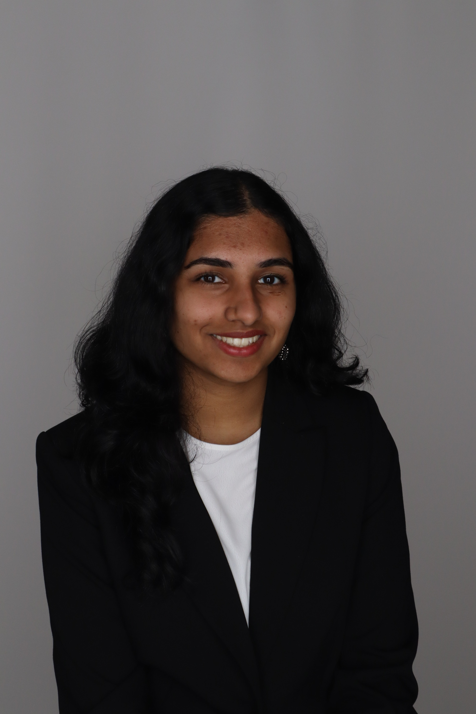

Arya Utture

Summary
Hey, my name is Arya Utture! I am currently an undergraduate student
at Rutgers University - New Brunswick majoring in computer science with
a potential minor in data science through the School of Arts and Sciences. My interests include, but are not limited to: web development, software
development, artificial intelligence, and machine learning.
Education
- Rutgers University - New Brunswick (Sept. 2022 - May 2026)
- Bachelor of Arts in Computer Science (Cumulative GPA: 3.5)
- Monroe Township High School (Sept. 2018 - June 2022)
- High School Diploma w/ Honors in General Studies (Weighter GPA: 4.0)
Relevant Coursework
- Introduction to Computer Science
- Data Structures and Algorithms
- Mathematical/Physical Sciences for Calculus I
- Mathematical/Physical Sciences for Calculus II
- Introductory Linear Algebra
- Discrete Mathematics I
- Computer Architecture
Work Experience / Involvement
- Undergraduate Student Alliance of Computer Scientists (USACS)
Sept. 2023 - Present
- Attend Hacker Hours which are bi-weekly tech workshops led by students, alumni, or industry representatives where we get to learn about CS topics that aren't covered in class.
- Part of a mentorship program where I am currently a mentee to seek advice on career development from upperclassmen.
- Participating and volunteering at the Fall 2023 HackRU Hackathon event.
- Women in Computer Science (WiCS)
Sept. 2023 - Present
- Have the opportunity to network with other like-minded women with an interest in cs.
- Able to gain networking experience with compnay recruiters via intern panels.
- Ronald McDonald House of Central NJ (RMHC)
Sept. 2023 - Present
- Community service club that helps in improving the health and well-being of sick children.
- As a volunteer I create crafts and make food items to give to the people in the Ronald McDonald House.
- United Nations International Children's Emergency Fund (UNICEF)
Sept. 2023 - Present
- Community service club that helps save children's lives in different ways.
- Participated in different fundraising events with other amazing UNICEF members.
- PwC Switzerland (Certificate in Data Analytics Through Power BI Virtual Internship)
June 2023 - Aug. 2023
- Task 1 (Call Centre Trends) : Created dashboard based on given Call Centre Dataset by giving an accurate long-term overview of trends in customer and agent behavior reflecting relevant KPIs in the dataset.
- Task 2 (Customer Retention) : Created dashboard based on given Churn Dataset and explained my findings along with suggestions and improvement for changes to my engagement partner for the retention manager by reflecting on defined KPIs on customer retention.
- Task 3 (Diversity and Inclusion) : Created dashboard based on given Diversity Inclusion Dataset and defined important KPIs by calculating important measures through different categories, and displayed data expressing root causes of the slow progress in diversity and inclusion.
- KPMG Australia (Certificate in Data Analytics Consulting Virtual Internship)
May 2023 - June 2023
- Task 1 (Data Quality Assessment) : Assessed and cleaned three underlying data sets and communicated those data quality issues by making recommendations for further analysis via email.
- Task 2 (Data Insights) : Created a PowerPoint presentation to recommend 1000 valuable new customers towards the organization, prepared a detailed analysis to understand data distributions, feature engineering, data transformations, modeling, results interpretation and reporting through three phases, and presented my findings to the client.
- Task 3 (Data Insights and Presentation) : Created a dashboard using the Tableau data analytical tool based on the data insights made from the previous task and specified which 1000 customers the marketing organization should target and reach out to.
- Monroe 33 Tennis, Basketball, and Sports Center (Assistant Tennis Coach)
April 2021 - Sept. 2022
- Worked 200+ hours alongside multiple experienced coaches using my skills and knowledge of the game to help the next generation of tennis players in youth clinics leagues of different skill levels to improve and love the sport.
- I had even gotten the unique and special opportunity to privately coach a student of autism allowing me to enjoy the job and sport even more so than I already did.
- Hindi-USA (Assistant Hindi Teacher (Volunteer))
Sept. 2018 - June 2022
- Assisted teachers by engaging students in multiple classroom activities.
- Helped prepare students to compete in annual cultural events against other Hindi-USA schools across New Jersey.
- Held special events to celebrate Hindu festivals like Holi and Diwali.
Technical Skills
- Languages: Java, Python, C, HTML/CSS, JavaScript, Assembly Language
- Developer Tools: VS Code, Eclipse, Tableau, Microsoft Power BI, Microsoft Word, Microsoft Excel, Microsoft Powerpoint
- Technologies/Framework: Unix, Linux, GitHub
Awards and Certifications
- Dean's List Spring 2023 Term (May 2023)
- Given to students from the School of Arts and Sciences Department who maintained a 3.500 GPA or above.
Other Information